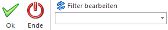
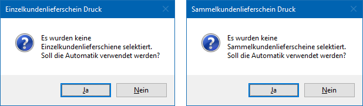

Im Menüpunkt…
1 WinLine FAKT
1 Erfassen
1 Kundenbestellungen
1 Kundenlieferscheine drucken
… können Lieferscheine für all jene Aufträge ausgegeben werden, deren Belegzeilen zuvor im Programm "Kundenbestellungen bearbeiten" zur Lieferung vorbereitet wurden.
Hinweis
Ob für die betroffenen Aufträge (d.h. deren Belegzeilen) zuvor Packzettel (siehe Programm Packliste drucken) gedruckt wurden, ist für die Erzeugung von Lieferscheinen nicht relevant.

Das Fenster unterteilt sich in die folgenden Register, welche in den nachfolgenden Kapiteln beschrieben werden:
ü Register "Lieferscheindruck"
In dem
Register "Lieferscheindruck" können Selektionen und Einstellungen für den Druck
der Lieferscheine vorgenommen werden.
ü Register "Selektion -
Einzellieferscheine"
In dem Register "Selektion - Einzellieferscheine"
kann eine manuelle Selektion erfolgen, welche Kundenaufträge als
Einzellieferscheine ausgegeben werden sollen.
ü Register "Selektion -
Sammellieferscheine"
In dem Register "Selektion - Sammellieferscheine"
kann eine manuelle Selektion erfolgen, ob und welche Kundenaufträge in einen
Sammellieferschein überführt werden sollen.
Hinweis
Ob es sich bei einem Kundenauftrag um einen Beleg handelt, welcher als Einzellieferschein ausgegeben werden soll oder auf einem Sammellieferschein zu münden hat, wird über die 3. Stelle im Status des Belegs definiert.
ü "A - Automatisch" oder "M -
Manuell"
Sollte an der 3. Stelle des Status ein "A" oder ein "M" stehen (z.B.
"M*AA"), dann werden für die Belegzeilen des Kundenauftrags ein
Einzellieferschein erstellt.
ü "S - Sammellieferschein"
Sollte
an der 3. Stelle des Status ein "S" stehen (z.B. "D*SA"), dann werden die
Belegzeilen des Kundenauftrags in einen Sammellieferschein überführt.
Buttons

Ø Ok
Durch Anwahl des Buttons "Ok" bzw. der Taste F5 werden die Lieferscheine, entsprechend der vorgenommen manuellen Selektion, gedruckt. Wurden die Register zur manuellen Selektion im Vorfeld nicht angewählt, so erfolgt eine Abfrage, ob der Druck trotzdem für diesen Bereich vorgenommen werden soll (auf Grundlage des Registers "Lieferscheindruck").

Achtung
Es werden nicht die Aufträge als solches in Lieferscheine umgewandelt, sondern immer nur jene Belegzeilen, welche zuvor im Programm "Kundenbestellungen bearbeiten" zur Lieferung vorbereitet wurden. Sobald alle Belegzeilen eines Auftrags in einen oder mehrere Lieferscheine gewandelt wurden (Auftragsmenge = Liefermenge), wird der Auftrag als "Erledigt" markiert!
Hinweis
Handelt es sich bei einem Artikel im Beleg um eine Handelsstückliste deren Komponenten nicht verfügbar sind, so wird unter Verwendung der Einstellung "Lagerstandsunterschreitung ist nicht erlaubt" (lt. Belegart) die Liefermenge der Handelsstückliste automatisch auf 0 gesetzt und ein entsprechender Eintrag im Belegdruckprotokoll geschrieben.
Ø Ende
Durch Drücken des Buttons "Ende" bzw. der Taste ESC wird das Fenster geschlossen und keine Lieferscheine erstellt.
Ø Filter bearbeiten
Durch Anklicken des Buttons "Filter bearbeiten" kann die Selektion von Belegen nach frei definierbaren Kriterien eingeschränkt werden.
Achtung
Wird im Filter eine Sortierung eingegeben, so wird diese nur bei der Anzeige der Einzellieferscheine im Register "Selektion - Einzellieferscheine" berücksichtigt.
Die Sortierung für Sammellieferscheine erfolgt ausschließlich mit Hilfe der Option "Optionen für Sammellieferscheine - Sortierung" bzw. kann über die Option "Optionen für Sammellieferscheine - Gruppierung" beeinflusst werden.